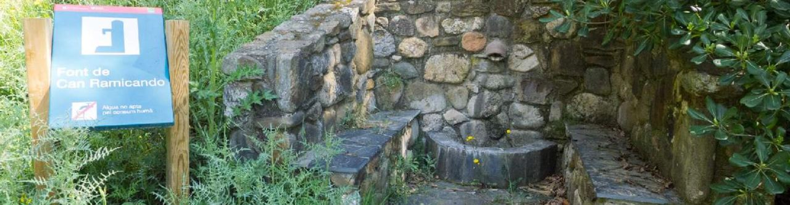

Ruta · Palautordera
Santa Maria de Palautordera és un poble ric en aigua, amb 26 fonts inventariades. En aquest itinerari en visitarem tretze, la meitat de totes elles. Agafar la bicicleta i explorar aquests ambients…